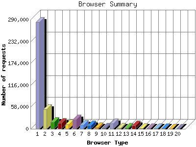

Analog 5.32
Analog 5.32 Report Magic 2.16
Report Magic 2.16The Browser Summary identifies the most popular web browsers used to visit
this site.
Browsers are broken down by recognized categories such as
Netscape Navigator/Communicator, Microsoft Internet Explorer, WebTV, Opera
and the like. Within each category is also a subgroup by version number
such as 'MSIE 5.0' or 'Netscape 4.5'.
This report shows the first 20 results by requests for pages. This report is sorted by number of requests for pages.

| Browser Type | Number of requests | Number of page requests | |
|---|---|---|---|
| 1. | MSIE | 282,904 | 64,099 |
| 2. | Netscape (compatible) | 51,745 | 47,815 |
| 3. | Googlebot | 18,347 | 17,953 |
| 4. | msnbot | 15,212 | 15,040 |
| 5. | InternetSeer.com | 11,780 | 11,780 |
| 6. | Mozilla | 25,063 | 9,797 |
| 7. | FAST-WebCrawler | 9,763 | 8,575 |
| 8. | Scooter | 8,559 | 8,001 |
| 9. | htdig | 4,404 | 4,223 |
| 10. | http: | 2,810 | 2,785 |
| 11. | Netscape | 14,501 | 2,637 |
| 12. | ia_archiver | 2,449 | 2,077 |
| 13. | TurnitinBot | 1,953 | 1,946 |
| 14. | Safari | 8,906 | 1,653 |
| 15. | psbot | 1,669 | 1,540 |
| 16. | Yahoo-VerticalCrawler-FormerWebCrawler | 1,331 | 1,262 |
| 17. | Konqueror | 1,216 | 1,034 |
| 18. | Pompos | 934 | 928 |
| 19. | Openbot | 576 | 576 |
| 20. | minibot(NaverRobot) | 498 | 498 |
| [not listed: 417] | 13,366 | 7,797 | |
This report was generated on March 2, 2005 10:49.
Report time frame March 9, 2003 20:57 to February 15, 2005 03:11.
| Web statistics report produced by: | |
| Analog 5.32 | Report Magic 2.16 |